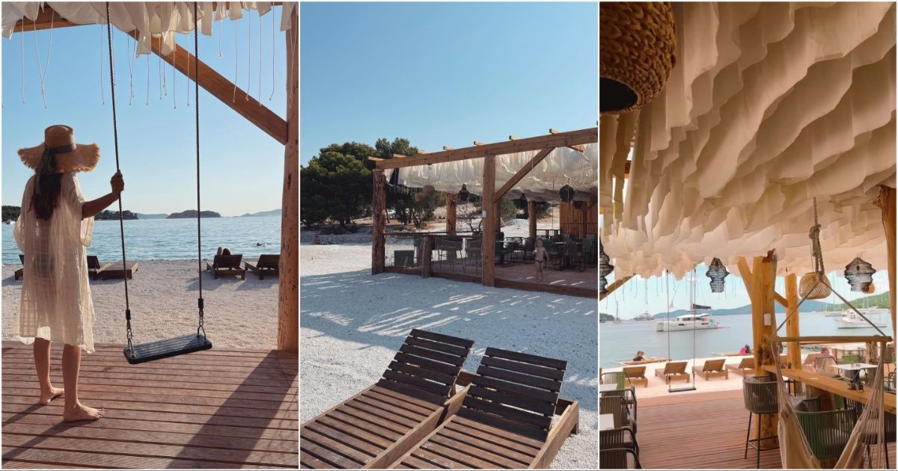
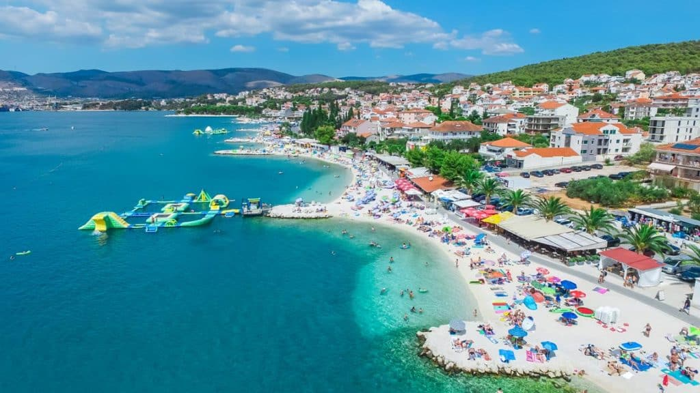

Quick Rides from Trogir
Reachable on any scooter, including 50cc models.

Beach Bar · 15 min
Beach Bar Borko
A must-visit coastal bar on Čiovo island. Great cocktails, chill music, and amazing sea views — perfect for a scooter stop.
View on Map
Monastery · 20 min
Gospa od Prizidnice
A serene cliffside monastery on Čiovo Island. One of the most spiritual and breathtaking spots near Trogir — a hidden gem best discovered on two wheels.
View on Map
Beach · 10 min
Okrug Beach
One of the most popular beaches near Trogir. Lively beach bars, water sports, and a long stretch of pebble beach — easily reachable on any scooter.
View on Map